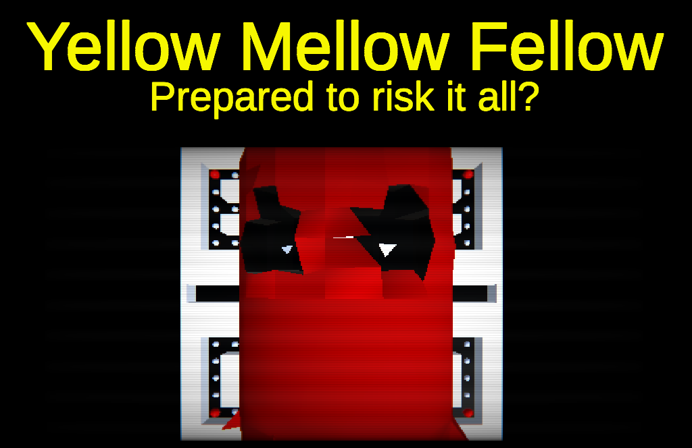

Latest releaseUnity · Horror · Roguelike
Yellow Mellow Fellow
A horror reimagining of the classic maze chase. Roguelike survival systems and randomised events make every run different. From level 3, the maze starts turning against you.
- 01Roguelike progression and survival mechanics layered onto arcade maze play
- 02Randomised event system that changes the rules of each run
- 03Horror escalation that shifts tone and pacing as levels advance